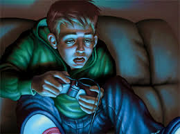

Vícios em jogos, e seus sintomas, afetados, sintomas,causa e ajuda

Neste site iremos te ajudar a identificar causas, sintomas e te ajudar com vícios em jogos tanto de pais quanto de filhos.
Neste site iremos te ajudar a identificar causas, sintomas e te ajudar com vícios em jogos tanto de pais quanto de filhos.